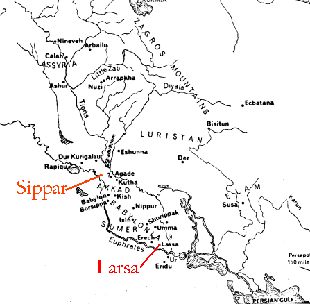
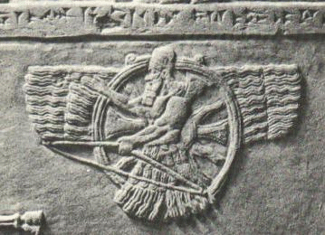

AZAZEL aka ZAZEL, SAMYAZA, SAMYAZAZEL, SHAMGAZ, SHEMYAZA, SHAMYAZA, SHEMIHAZAH, SHAMASH (Babylonian), UTU (Sumerian; The Shining One),* SAMAS (Akkadian), BABBAR (Sumerian), Ashur (Assyrian), SHAMIYAH (Hathra), SEMJAZA
*The above, he dictated to me personally.
From High Priestess Maxine:
Azazel worked extensively with me on this page. He led me to many different references and resources (Listed below). He told me to mention the "Code of Hammurabi" and that the contents of this document have been drastically altered through the centuries and what we have now resembles nothing of the original. Azazel stands for justice and does not in any way advocate submission or turning the other cheek. "Azazel appears to me with an incredibly vibrant green Aura. He is strict if you are not doing what is required of you, but he is very friendly and understanding - especially if you are going through bad times like psychic attack or bad planets. Azazel has helped me and guided me so much, I remember when I was going through some really bad planets and the when things got to the point where I felt like I was going to crack, Azazel-sama reassured me and made me feel that I was making Father Satan, Him and the Gods Proud and that the Bad times will pass. I am so thankful to Azazel!"
"Ellasar's Sumerian name is given as Ararwa, apparently for Arauruwa, 'light-abode,' which, in fact, is the meaning of the ideographic group with which it is written. The ruins of this ancient site are now known as Senqara, and lie on the East bank of the Euphrates, about midway between Warka (Erech) and Muqayyar (Ur of the Chaldees). "In Bad-Tibira, established as an industrial center, Enlil installed his son Nannar/Sin in command; the texts speak of him in the list of cities as NU.GIG ('He of the night sky'). There, we believe the twins Inanna/Ishtar and Utu/Shamash were born--an event marked by associating their father Nannar with the next zodiacal constellation Gemini (the twins). As the god trained in rocketry, Shamash was assigned the constellation GIR (meaning both 'rocket' and 'the crab's claw' or Cancer), followed by Ishtar and the Lion (Leo), upon whose back she was traditionally depicted."²
The Judeo/Christian Bible reads that "Azazel taught men to make swords, knives, shields, body armor." AZAZEL'S SIGIL ONE
*Many of the Original Gods were known as "The Shining Ones" because of their powereful auras.
¹ International Standard Bible Encyclopedia
Other References:
Religion in Ancient Mesopotamia by Jean Bottéro An Illustrated Dictionary, Gods, Demons and Symbols of Ancient Mesopotamia by Jeremy Black and Anthony Green, © 1992
Mythology of the Babylonian People by Donald A. Mackenzie © 1915
© Copyright 2005, 2016, Joy of Satan Ministries;
Azazel works directly with Satan
He is in charge of top security in Hell.
I know Azazel well and am very close to him. He is a very high ranking and important God. He is 7 1/2 feet tall, very strongly built with light blonde hair that is past his shoulders and flowing. He has piercing bluish grey eyes. He is very powerful and dedicated to Lucifer. He expects 100% and can be serious and strict. He closely interacted with and educated humans in ancient times. **AZAZEL IS NOT PAIMON as some of the grimoires of abuse claim. They are both different Gods. Azazel is a Prince. Paimon is a King. Azazel is very high ranking; VERY close to Lucifer. He says he is around 60,000 Earth years old.
Although there are a few accounts of Azazel's being married to various Goddesses, this is inaccurate. Azazel took a human wife some 10,000 years ago.
Hail Azazel!
--Vovim Baghie
Azazel did not want this to be known several years ago, but he is a son of Satan, not Beelzebub. 
Azazel is a warrior god of justice and truth. His cities were "Sippar," an ancient Akkadian city on the east bank of the Euphrates, north of Babylon and Larsa/Ellasar of Sumeria. Sippar is 20 miles (32 km) southwest of Baghdad in Iraq. Sippar was one of the first cities to be established by the Gods.
In addition to the name Larsa, it seems also to have been called Aste azaga "the holy (bright, pure) seat" (or throne), and both its names were apparently due to its having been one of the great Babylonian centers of sun-god worship.
Like most of the principal cities of Babylonia, it had a great temple-tower, called E-dur-an-ki, 'house of the bond of heaven and earth.' The temple of the city bore the same name as that at Sippar, i.e. E-babbar, 'House of Light,' where the sun-god Samas was worshipped. This temple was restored by Ur-Engur, Hammurabi (Amraphel), Burna-burias, Nebuchadrezzar and Nabonidus. Among the tablets found on this site by Loftus was that which gives measures of length and square and cube roots, pointing to the place as one of the great centers of Babylonian learning. Besides the remains of these temples, there are traces of the walls, and the remains of houses of the citizens. The city was at first governed by its own kings, but became a part of the Babylonian empire some time after the reign of Hammurabi."¹
 Azazel is the God of Justice and Revenge. He is a Master of the Black Arts and the Protector of Travelers. His symbol the faravahar (shown at left), represents freedom of choice and protection. The faravahar is the original winged disk.

He was the rebel leader of the Igigi. Azazel is also the the God of divination and has been consulted by many soothsayers. He was also the Chief Deity of the City of Hathra.
As the Chief Deity of Hathra, he was known as "Shamiyah." Note the horns in the photo of the sculpture at left.
Along with his grandfather Beelzebub, he controlled the airways for the Gods, wearing his symbol of the eagle.
The grimoires of spirit abuse claim that Azazel is a genius at working with metals, minerology, and geology. This is all symbolic. He is a Master of Alchemy; Spiritual Alchemy. Spiritual Alchemy has to do with the transformation of elements within the human soul, drawing energy from the earth and working with the earth spiritually. Each of the seven chakras is represented by a specific metal. Azazel works with dedicated disciples of Satan to achieve godhead.
All of the above is spiritual. The biblical account was twisted. The "swords, knives, shields, and body armor" are all spiritual weapons. He is an expert on the planets, constellations and astrology.
He is also very skillful in the arts, cosmetology, crafting of ornaments and jewelry. Azazel creates beauty.
AZAZEL'S SUMERIAN SIGIL
² The 12th Planet by Zecharia Sitchin © 1976
Translated by Teresa Lavendar Fagan, University of Chicago Press, © 2001
Library of Congress Number: 001-216-457

{kind=link}
{kind=link}